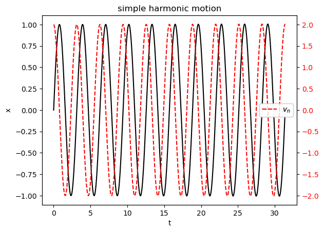
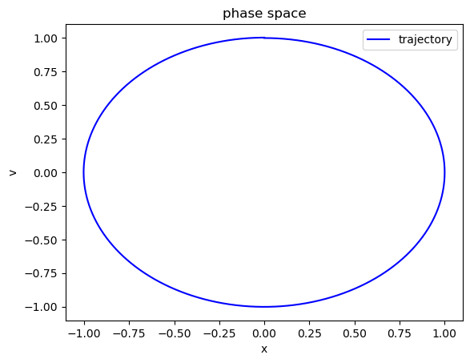
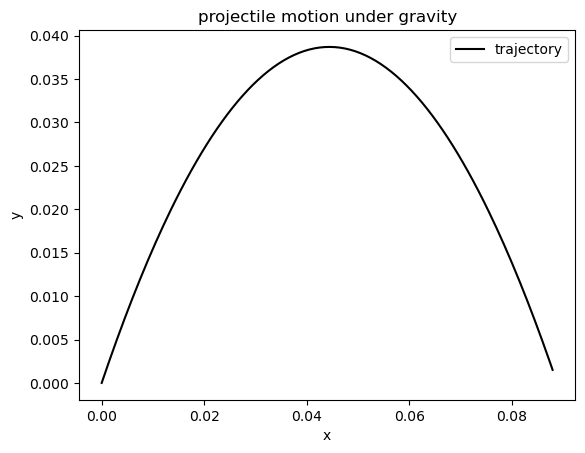

Numerical solution to differential equation#
Problem statement: Given a second order differential equation of dependent variable x and independent variable time t, and given the initial values (at time \(t=0\)) for the position \(x(0)\) and velocity \(\dot{x}(0)\), the aim is to solve after time duration \(t\), the position \(x(t)\) and velocity \(\dot{x}(t)\).
The idea is to decompose the second order differential equation into two first order differential equations
Let us denote the first order derivative as velocity \(v\) and is given by
so that the second differential equation can be written in terms of \(x, t, v\) as
The set of first order differential equations that are equivalent to the given second order differential equation is
\begin{align} \dot{x} &= v \ \dot{v} &= f(x, t) \end{align}
Generalized position and velocity#
If we represent the set of position and velocity as the generalized position of the particle, it can be represented as a ket that is a 2-column vector $\( |\psi\rangle = \left( \begin{matrix} x \\ v \end{matrix} \right) \)$
Here, ket resides in the two-dimensional space spanned by position and momentum. This space is called phase space of the particle.
Similarly, if we represent the set of rate of change of position and rate of change of velocity as the generalized velocity of the particle, it can be represented as a ket that is a 2-column vector
Finite difference formula for velocity#
If we discretize the time axis with equally spaced time samples \({t_n}\) with spacing \(\Delta t = t_n - t_{n-1}\), then
If the samples of kets are denoted by \(|\psi(t_n)\rangle = |\psi_n\rangle\), then
Recurrence relation#
Due to the finite difference formula, the values of ket at timestamp \(n\) can be expressed in terms of values of ket at \(n-1\) and other independent variables.
\begin{align} |\psi_n\rangle &\sim |\psi_{n-1}\rangle + \Delta t |\psi_{n}\rangle^{‘},\ \left( \begin{matrix} x_{n} \ v_{n} \end{matrix} \right) &= \left( \begin{matrix} x_{n-1} \ v_{n-1} \end{matrix} \right) + \Delta t \left( \begin{matrix} \dot{x}{n} \ \dot{v}{n} \end{matrix} \right) \ &= \left( \begin{matrix} x_{n-1} + v_n \Delta t \ v_{n-1} + f(x_n, t_n)\Delta t \end{matrix} \right) \end{align}
But let us express \(v_n\) on the RHS in terms of \(v_{n-1}\) so that
If the error propagation due to \((\Delta t)^2\) is neglected, then
The RHS can be considered as a matrix transformation so that
Simple Harmonic Motion#
so that \(f(x, t) = -\omega^2 x\). The evolver is
# Implementation of recurrence relation
import numpy as np
import matplotlib.pyplot as plt
dt = 1e-4
omega = 2
n = 10 # number of periods
ts = np.arange(0, 2.0*np.pi/omega*n, dt)
# initial ket (x0, v0) = (0, 1)
ket0 = np.array([0, 2])
ket0
array([0, 2])
def evolver(ket, step):
x, v = ket
stepper = np.array([[1, step], [-1.0*omega**2*step, 1]])
evolved_ket = stepper.dot(ket)
return evolved_ket
kets = np.zeros((len(ts),2))
for i in range(len(ts)):
if i==0:
evolved_ket = ket0
kets[i] = evolved_ket
else:
evolved_ket = evolver(kets[i-1], dt)
kets[i] = evolved_ket
xs, vs = kets[:,0], kets[:,1]
fig, ax = plt.subplots()
ax.plot(ts, xs, 'k-', label=r'$x_n$')
ax2 = ax.twinx()
ax2.plot(ts, vs, 'r--', label=r'$v_n$')
ax.set_xlabel('t')
ax.set_ylabel('x')
ax.legend()
ax2.tick_params(labelcolor='r')
ax2.set_xlabel('v')
ax2.legend()
ax.set_title('simple harmonic motion')
Text(0.5, 1.0, 'simple harmonic motion')

Configuration space#
The space spanned by the position coordinates of the system is called the configuration space. Here, the particle is in one-dimensional motion. Hence, the configuration space is one dimensional. However, not all of the axis is spanned. There are turning points due to the harmonic motion.
Since we started with initial velocity at origin, the particle reached maximum position \(x_{max}\) where the velocity is zero. Similarly, the other turning point is at \(x_{min}\).
The trajectory of the particle can be represented as set of the \(x(t), v(t)\) parametrized curves, where \(t\) is the parameter.
Phase space#
The space spanned by the position and velocity coordinates is called the phase space. The phase space of the particle in 1D simple harmonic motion will be two-dimensional.
The trajectory of the particle is represented as a single parametrized curve.
# Phase space visualization
fig, ax = plt.subplots()
ax.plot(xs, vs, 'b-', label='trajectory')
ax.set_xlabel('x')
ax.set_ylabel('v')
ax.set_title('phase space')
ax.legend()
<matplotlib.legend.Legend at 0x792af7b83ed0>

Acceleration due to gravity#
Let us consider a two dimensional problem of a particle projected at an angle to the horizontal. The aim is to solve for the trajectory of the particle.
We have
where \(g\) is the acceleration due to gravity.
This is a vector equation that can be decomposed into two scalar equations.
\begin{align} \ddot{x} &= 0 \ \ddot{y} &= -g \end{align}
If we denote the velocity components as
Then the set of two second order differential equations can be decomposed as a set of four first order differential equations
\begin{align} \dot{x} &= v_x \ \dot{y} &= v_y \ \dot{v_x} &= 0 \ \dot{v_y} &= -g \end{align}
Thus if the state of the system is represented by the 4-column ket
then the velocity of the state is given by
We can extend the finite difference method to four dimensional ket and solve for the trajectory.
The evolution is given by
where the evolver is then given by
and
dt = 1e-3
g = 9.8 # acceleration due to gravity
alpha = np.pi/3.0 # np.pi/2.0 projectile angle
v0 = 1 # initial speed
T = 2.0*v0*np.sin(alpha)/g # time of flight
ts = np.arange(0, T, dt)
T
np.float64(0.1767398783233548)
# initial ket (x0, y0, vx0, vy0)
x0 = 0
y0 = 0
vx0 = v0*np.cos(alpha)
vy0 = v0*np.sin(alpha)
ket0 = np.array([x0, y0, vx0, vy0])
def evolver_projectile(ket, step):
x, y, vx, vy = ket
stepper = np.array([[1, 0, step, 0], [0, 1, 0, step], [0, 0, 1, 0], [0, 0, 0, 1]])
offset = np.array([0, 0, 0, -1.0*g*step])
evolved_ket = stepper.dot(ket) + offset
return evolved_ket
kets = np.zeros((len(ts),4))
for i in range(len(ts)):
if i==0:
evolved_ket = ket0
kets[i] = evolved_ket
else:
evolved_ket = evolver_projectile(kets[i-1], dt)
kets[i] = evolved_ket
xs, ys, vxs, vys = kets[:,0], kets[:,1], kets[:,2], kets[:,3]
fig, ax = plt.subplots()
ax.plot(xs, ys, 'k-', label='trajectory')
ax.set_xlabel('x')
ax.set_ylabel('y')
ax.legend()
ax.set_title('projectile motion under gravity')
Text(0.5, 1.0, 'projectile motion under gravity')

Step potential#
Let us now solve TISE the particle encountering a step potential